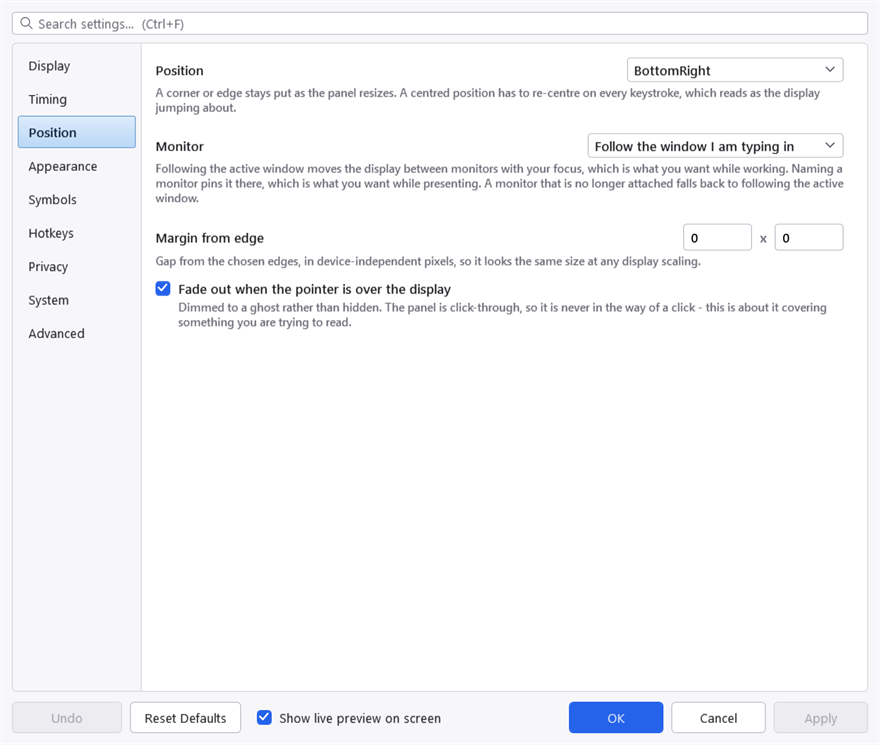

Where it appears
Everything here is on the Position tab.

The Position tab. One list for the monitor, holding both the follow-the-focus mode and each attached screen by name.
Position
The panel is anchored to a corner or an edge of the screen. Bottom-right is the default.
A corner or an edge stays put as the panel resizes, and the panel resizes on almost every keystroke — Ctrl + Shift + Home is a great deal wider than a. A centred position has to re-centre every time that happens, which reads as the display jumping about while you type.
That is not a reason never to choose one, but it is the reason the default is a corner.
Monitor
One list, holding both the mode and the monitors:
- Follow the window I am typing in moves the display between monitors with your focus. This is what you want while working.
- Primary monitor, or any monitor by name, pins it to one screen. This is what you want while presenting — a display that follows your focus onto the screen the audience cannot see is worse than no display.
A monitor that is no longer attached falls back to following the active window, which is the common case after a laptop is undocked.
Margin from edge
The gap from the anchored edges, in device-independent pixels — so it looks the same size whatever the display scaling is.
Fade out when the pointer is over the display
On. The panel is dimmed to a ghost rather than hidden.
Dimmed rather than hidden because the panel is click-through: it is never in the way of a click, so the only problem it can cause is covering something you are trying to read, and a ghost still says "something is here" while letting that something be read.
Multiple monitors and DPI
Positions are computed in physical pixels and applied directly to the window, which is what makes a mixed-DPI setup work — a 150% laptop screen beside a 100% external one puts the panel in the right place on both.
The margin is the one value that is scaled, because a 16-pixel gap should look like the same gap on both screens rather than being visibly smaller on the denser one.
Project on SourceForge ·
Report a problem · MIT licence ·
This manual is generated from docs/manual.